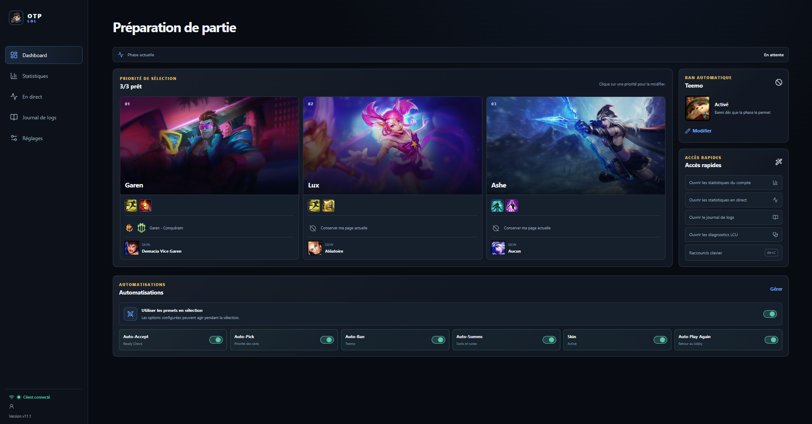

Dans la queue
Ne rate plus le départ
Active l’acceptation du ready check pour rejoindre la partie dès qu’elle est trouvée.
Ton compagnon League sur Windows
À chaque partie, tu refais les mêmes réglages et les mêmes recherches. Prépare tes presets une fois, choisis ce que tu veux automatiser, puis garde ton attention sur le jeu.

Pourquoi refaire les mêmes détours à chaque partie ?
Champion à choisir, sorts à replacer, profils à rechercher : ces petits gestes s’accumulent et coupent ton élan. OTP LOL garde ta routine prête et intervient aux étapes que tu as choisies.
Dans la queue
Active l’acceptation du ready check pour rejoindre la partie dès qu’elle est trouvée.
En sélection
Définis tes picks prioritaires, ton ban et le preset à utiliser selon ton rôle.
Pour chaque partie
Tes sorts, runes et skins suivent tes presets, puis tu reviens plus vite au lobby après la partie.
Tu peux activer ou désactiver chaque automatisme quand tu veux.
Pensé pour jouer, pas pour te compliquer la vie
Prépare tes champions et tes automatismes sans te perdre dans les menus. Et quand tu veux consulter des stats, retrouve tes services favoris au même endroit.
Explore l’application 01—03
Retrouve tes presets, les actions activées et l’état du client dans une vue simple.
Les bonnes infos, au bon moment
Quand tu découvres tes alliés et tes adversaires, les infos utiles sont souvent éparpillées. OTP LOL te ramène à tes services de stats en un clic, au lieu de te laisser refaire le parcours dans un navigateur.
Pendant la préparation, ouvre d’un clic la vue live de ton site favori pour consulter les profils des joueurs de la partie. Plus besoin de lancer le navigateur, chercher le site, retrouver la partie puis naviguer entre les pages.
Après le match, retrouve en un clic la page de statistiques de ton compte sur le service que tu préfères. Ton Riot ID et ta région sont déjà associés au lien : tu n’as pas à les ressaisir.
Les pages s’ouvrent dans une fenêtre dédiée depuis OTP LOL. Le service de stats choisi reçoit le lien du profil consulté.
Simple dès la première partie
Choisis tes champions, priorités, sorts, runes et skins préférés. Tes choix t’attendent pour les parties suivantes.
Active seulement les actions qui te font gagner du temps. Rien n’est imposé : chaque automatisme reste réglable.
Ouvre League. OTP LOL suit les étapes de la partie et applique tes choix lorsqu’ils sont utiles.
Tes données, chez toi
Tes réglages, l’identité League détectée et les statistiques lues dans le client sont conservés sur ton PC. Aucun compte OTP LOL ni profil joueur n’est hébergé. Les images de champions et de runes viennent de catalogues publics comme Data Dragon et CommunityDragon. Si tu ouvres un service de stats, seul le lien du profil demandé lui est transmis.
La prochaine partie t’attend
Télécharge OTP LOL et configure ton assistant à ton image.
OTP LOL est un projet indépendant, non affilié à Riot Games.